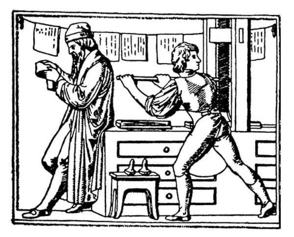

61
Print and Powder
印刷术和火药——新旧时代的交替

UP to this time there was not a printed book anywhere in Europe. There was not a newspaper. There was not a magazine. All books had to be written by hand. This, of course, was extremely slow and expensive, so there were very few of even these handwritten books. Only kings and very wealthy people had any books at all. Such a book as the Bible, for instance, cost almost as much as a house, and so no poor people could own such a thing. Even when there was a Bible in a church, it was so valuable that it had to be chained to keep it from being stolen. Think of stealing a Bible!
Actually, if you remember, the Chinese invented printing. Later, people began to print books in a new way. First the printer put together wooden letters called type, and then smeared them with ink. Then he pressed paper against this inky type and made a copy. After the type was once set up, thousands of copies could be made quickly and easily. Then he could take the letters apart and use them to make the next page. This, as you of course know, was printing. It was printing with movable type. It all seems so simple, the wonder is that no one had thought of this type of printing thousands of years before.

Gutenberg at his press, comparing a printed sheet with a manuscript
古腾堡在印刷机旁，正在比较印刷稿和手写稿
It is generally believed that a German named Gutenberg made the first printed book in Europe. And what book do you suppose it was that he printed? Why, the book that people thought to be the most important book in the world—the Bible. It took Gutenberg five years to make such a big book, and he finished it in 1456.The first dated book printed in England was made by an Englishman named Caxton. It was called Sayings of the Philosophers , and was printed in 1477.
Before this time few people, even though they were kings or princes, knew how to read. There were no books to teach them how to read and few books for them to read if they had learned. So what was the use of learning?
You can see how difficult it must have been for people throughout the Middle Ages, without books or newspapers or anything printed, to learn what was going on in the world, or to learn about anything that one wanted to know.
Now that printing had been invented, all that was changed. Storybooks, schoolbooks, and other books could be made in large numbers and more cheaply. People who never before were able to have any books could now own them. People could now read all the famous stories of the world and learn about geography, about history, about anything they wanted to know. The invention of movable type was soon to change everything.
The Hundred Years' War had at last come to an end soon after the invention of printing.
At the same time something else that was a thousand years old came to an end.
The Muslims, whom we haven't heard of for a long time, had tried to capture Constantinople in the seventh century but had been stopped, as I told you, by tar and pitch that the Christians poured down on them.
Now in 1453 the Muslims once again attacked Constantinople. This time, however, the Muslims were Turks, and they didn't try to batter down the walls of the city with arrows. They used gunpowder and cannon. Against the power of this new invention the walls of Constantinople could not stand, and finally the city fell. Constantinople became Turkish and the magnificent Church of Santa Sophia, which Justinian had built a thousand years before, was turned into a mosque for Muslim worship. This was the end of all that was left of the old Roman Empire—the other half of which had fallen in 476.
Ever after the downfall of Constantinople in 1453, wars were fought with gunpowder. No longer were castles of any use. No longer were knights in armor of any use. No longer were bows and arrows of any use—against this new kind of fighting. There was a new sound in the world, the sound of cannon—firing: “Boom! boom! boom!” Before this, battles had not been very noisy except for shouts of the victors and the moans of the dying. So some people call 1453 the end of the Middle Ages and the beginning of Modern History.
Gunpowder had put an end to the Middle Ages. The invention of printing and that little magic needle, the compass, did a great deal to start what we call Modern History.
【中文阅读】
直到此时，欧洲各地还没有一本印刷出来的书。没有一张报纸，没有一本杂志。所有的书籍只得用手写。这样的书做出来自然非常慢而且价格昂贵，所以就连这些手写的书也非常少。只有国王和很富有的人才有那么几本。比如，像《圣经》这样一本书的价格和一栋房子差不多，所以穷人根本不可能有这样的东西。如果教堂里有一本圣经，那可是珍贵得不得了，为了防止被偷，非得用链子锁起来不可。想想看，还有人去偷一本《圣经》！
如果你还记得，实际上是中国人发明了印刷术。后来人们开始用新的方法印制书籍。首先印刷工人把称作活字的木制字模排列在一起，然后在上面刷上油墨。接着他把纸压在沾有油墨的字模上，这样制成了一页副本。活字只要排列无误，就可以又快又轻松地印刷数千份副本了。之后工人可以把这些排列好的活字拆开，把它们重新组合印下一页。你当然知道，这就是印刷。上述的印刷方式就是活字印刷。看上去这一切很简单，奇怪的是几千年前没有人想到这种印刷。
人们普遍认为一个名叫古腾堡的德国人在欧洲印出了第一本书。你猜他印的是什么书？当然，这本书就是人们认为世界上最重要的一本书——《圣经》呀。印制这本大部头的书花了古腾堡五年的时间，到1456年才完成。
英国第一本印有出版日期的书是一个名叫卡克斯顿的英国人印刷的。此书的书名是《哲学家名言录》，印于1477年。
在此之前，很少有人会读书识字，即使国王或王子也不会。没有书教他们怎样读书识字；即使他们懂得阅读，也没有什么书供他们阅读。所以学习有什么用呢？
你可以想象在整个中世纪，在没有书籍、没有报纸和任何印刷品的情况下，人们要知道世界上发生了什么，或者要了解自己想知道的什么事，该有多么困难。
由于印刷术的发明，一切都改变了。故事书、教科书和其他书籍可以大量印出来，也更加便宜。以前一本书也没有的人现在都能买得起书了。现在人们可以阅读世界上所有著名的故事，可以了解有关地理、历史和他们想知道的任何事情。活字印刷术的发明很快就要改变一切。
印刷术发明后不久，百年战争终于结束了。
与此同时，其他有着一千多年历史的事情也要结束了。
我们很久没有谈到穆斯林了，我上次给你讲过在7世纪穆斯林想要攻占君士坦丁堡，基督徒从城堡上向下泼焦油和沥青，挡住了他们的进攻。
在1453年穆斯林又一次进攻君士坦丁堡。不过这一次，穆斯林是土耳其人，他们不想用弓箭摧毁城墙。他们使用了火药和大炮。君士坦丁堡的城墙顶不住这种新发明的威力，最终沦陷了。君士坦丁堡落到土耳其人的手里，一千年前东罗马皇帝查士丁尼建造的宏伟的圣索菲亚大教堂变成了一座穆斯林朝拜的清真寺。这是残存的旧罗马帝国的终结——而另一半，西罗马帝国早在公元476年就衰亡了。
自1453年君士坦丁堡沦陷以后，战争都使用火药了。在这种新型作战方式的强大威力下，城堡不再有什么用处了，身着盔甲的骑士也不再有什么作为了，弓箭也从此退出历史舞台了。世界响起了一种新的声音，大炮发射时的响声——“轰隆！轰隆！轰隆！”在这之前，除了胜利者的欢呼声和垂死者的呻吟声之外，战争不是很喧闹。所以有些人将1453年称为中世纪的结束，现代史的开端。
火药使中世纪走到了尽头。印刷术和那根小魔针——罗盘的发明对我们称为现代历史的开始，发挥了极大的作用。